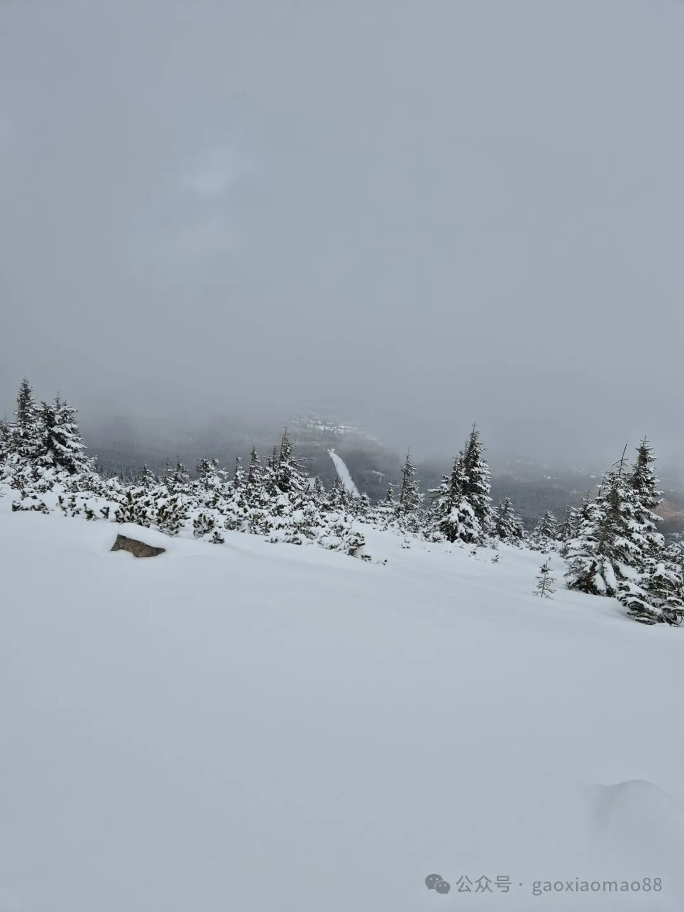
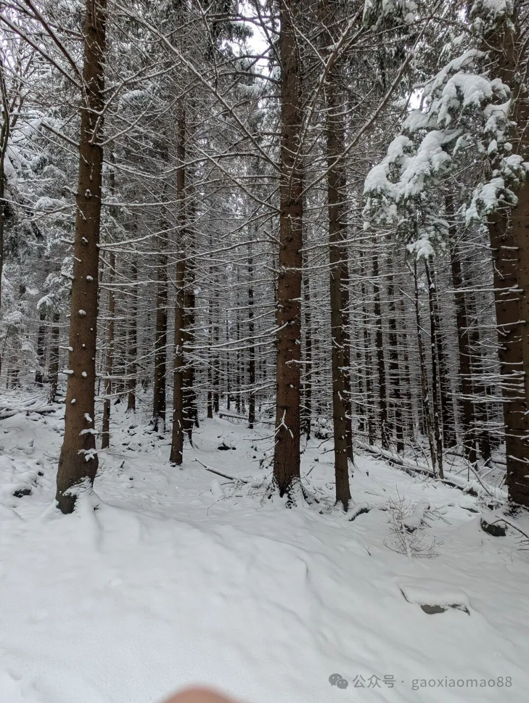
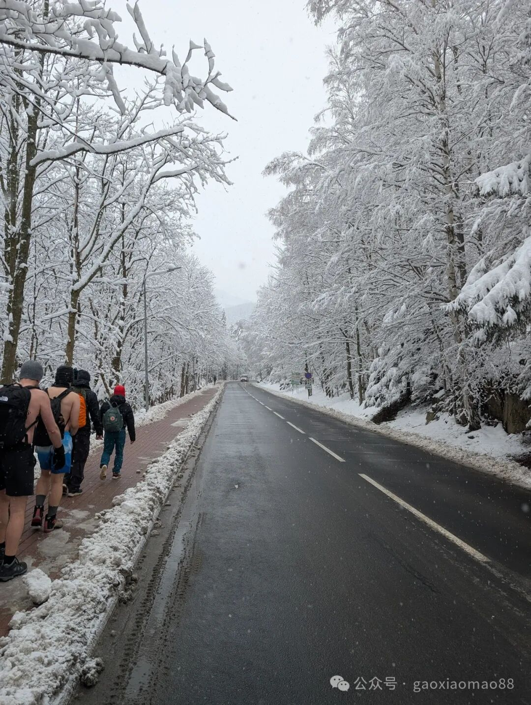
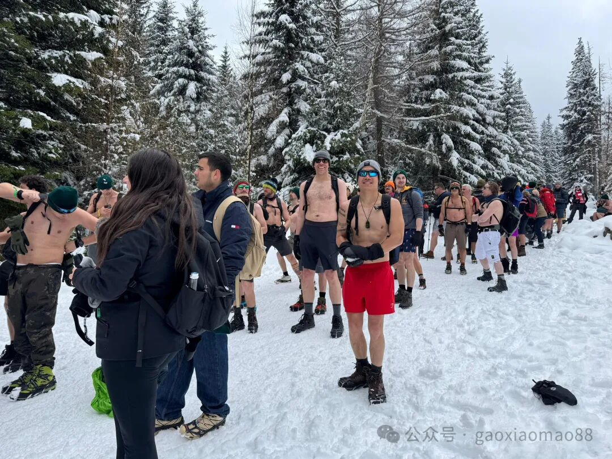
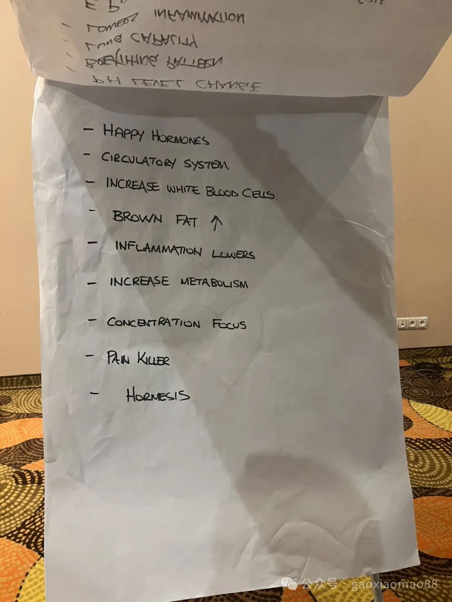
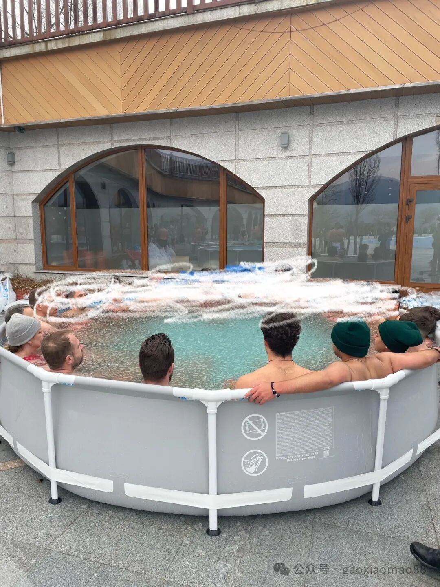

1. WHAT
首先定义一下冰天雪地。


然后定义一下赤身。


6个小时的徒步则是分为两段，上山三小时，然后在一个休息站休息45分钟，吃点东西暖和一下，然后下山三小时。
2. WHY
直接上图。

我个人感觉，最大的效果是耐冷能力暴增。至于心血管方面的好处，荷尔蒙更平衡，人更能集中注意力，免疫力增强等等好处，据说是有科学研究，但是我自己也无法证实。
3. HOW
最重要的来了。
我们中医理论里，会觉得受凉对身体是不好的，而且这么冷的天气赤膊，身体也确实很冷。
那要如何不冻坏呢？
主要靠两个，一个是意念，一个是运动带来的热量。
意念指的是集中注意力，想象身体有一团火，一团气在燃烧，流动。有点类似于道家练气的感觉。
运动则是类似于扎马步，或者徒步也会产生大量的热。
还有一点就是要逐渐适应，降温的时候要先赤膊在常温下，不冷以后再进入低温环境，并且保持运动。而且要保护好关键位置，比如脚，手，头。升温的时候也要逐渐适应，不能一下子从很冷到很热。
除此以外要有一定的锻炼，比如冰水浴。

一般是2-5分钟左右。
在冰水浴前后都需要做热身，确保身体是热的，而且要意念集中，让身体冷静下来，呼吸均匀放松。
以上的这些方法论来自于wim hof method。我自己和400多个人一起参考了今年wim hof expedition在波兰的camp，收益良多，写这篇文章分享一下。
除了这种cold exposure的锻炼，wim hof的呼吸法也很有意思。类似于冥想但是又不是完全一样。而且据说这种呼吸法还有一定的致幻效果，类似于不用嗑药就能进入类似于high的体验，有助于在不损害身体的情况下释放压力。对此Tim ferris，huberman lab等自媒体有对应的视频和采访，感兴趣的可以看看。
完